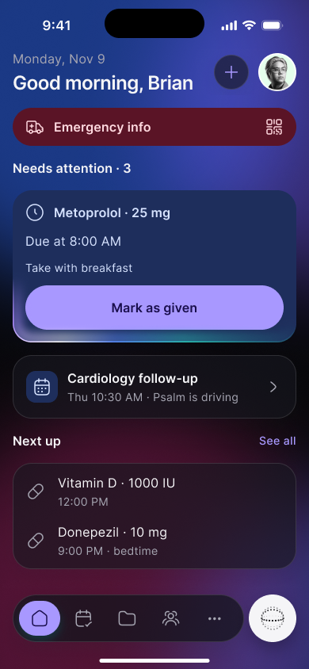
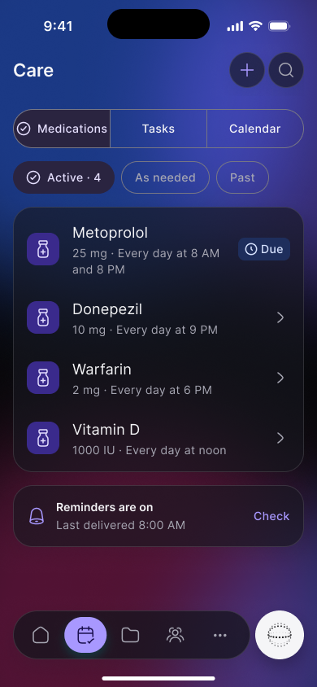
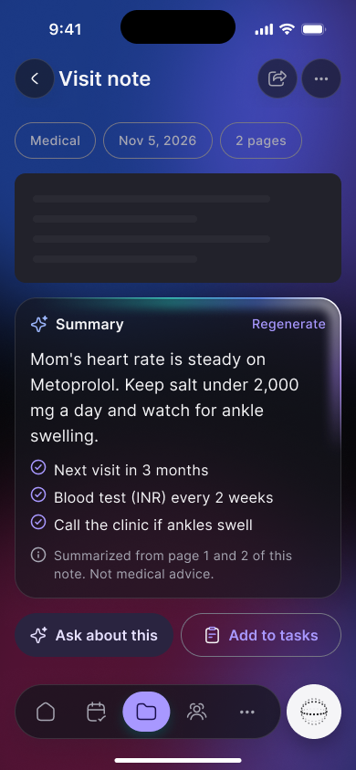
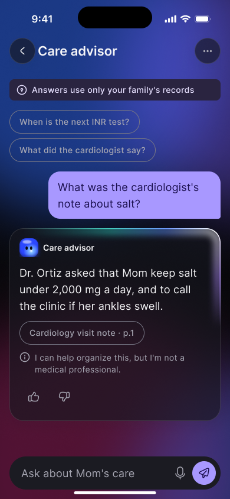
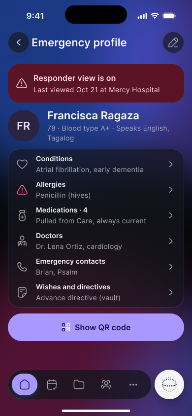

Family Caregiving App
Alleviating the emotional and operational burden of elder care: a collaborative mobile application managing shared medication schedules, clinical record archives, and emergency first-responder profiles with zero cognitive friction.


01 / The Context
Supporting adult children navigating the disorienting maze of elder care.
When an aging parent develops complex medical needs, family caregiving quickly becomes an overwhelming second full-time job. Schedules are managed via messy pillboxes, paper calendars, and panicked text threads between siblings.
The consequences of miscommunication are dangerous: accidental double-dosing of blood thinners, missed specialist follow-ups, and paralyzing anxiety during hospital emergency visits where treating physicians ask for exact prescription histories that no family member can immediately locate.
Our objective was to construct a calming, fail-safe coordination tool that acts as a single source of truth for the entire family circle: synchronizing dose administration in real time, summarizing intimidating discharge paperwork with AI, and equipping first responders with immediate life-saving medical data.
Zero-Conflict Dosing
Real-time state synchronization immediately marks doses as taken across all family devices, preventing lethal accidental double administrations.
Paramedic Emergency QR
Lock-screen accessible medical profile displaying allergies, DNR status, primary physician contacts, and active prescriptions without unlocking the phone.
02 / Design Architecture
Designed with empathetic typography and oversized touch targets for stressed hands.
Caregivers are often exhausted, multitasking, or viewing their phone in fluorescent emergency waiting rooms. Traditional tiny UI controls and low-contrast grey text exacerbate anxiety.
We engineered an accessibility-first token system: minimum touch targets of 56px for core actions, clear iconography from Hugeicons Stroke Rounded, and soft natural surface tones that convey emotional warmth without sacrificing medical precision.
Visual status flags are paired with both color and descriptive icons (a checkmark for taken, a clock for upcoming, an alert shield for overdue) so colorblind family members can navigate with complete certainty.
03 / Interface Deep Dive
AI document synthesis, dedicated care advisors, and rapid emergency dispatch.
Beyond daily pill reminders, the app acts as a digital health advocate. Three standout features streamline the most stressful moments in caregiving.

01 • AI Health Vault
Scan dense discharge papers or blood test results to receive an immediate plain-language summary of action items.

02 • AI Care Advisor
Ask natural questions about drug interactions or mobility assistance, backed by strict clinical guardrails.

03 • Emergency Profile
Instantly beam vital allergies, blood type, and insurance details to hospital intake with one secure QR code.
04 / Shipped Impact
Restoring peace of mind and transforming daily family care coordination.
In clinical pilot programs with geriatric health networks and independent caregiving families, the application demonstrated dramatic improvements in routine compliance and emotional relief.
Families reported a profound reduction in caregiver stress, citing the shared visibility of tasks as the single most important factor in preventing burnout and family friction.
"Before this app, my brother and I were constantly texting back and forth asking if Dad took his morning pills. Having one clear, shared screen gave us our lives back and kept our Dad out of the emergency room."